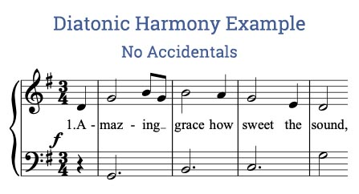

Diatonic Harmonies - Henry Balducci
A diatonic harmony refers to the musical practice of using chords derived from the notes of a particular key or scale, resulting in a harmonically coherent progression. It forms the foundation of most Western tonal music, creating a sense of stability and resolution through the use of related chords within a key.
- These harmonies create a sense of cohesion and stability within a piece of music.
- Diatonic harmonies are the basis of most Western music, providing a framework for chord progressions and melodies.
- Diatonic harmonies are used in various genres, including classical, pop, and jazz.
- They are very important for understanding music theory and composition music theory and composition.

Copyright - Henry Balducci 2024.